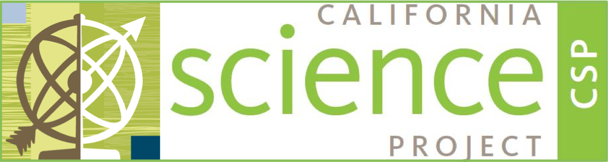
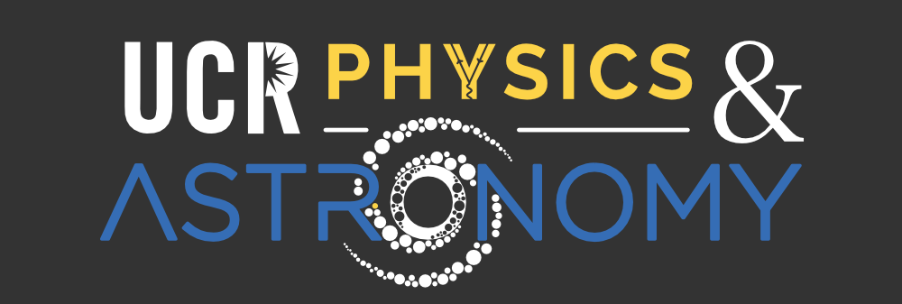
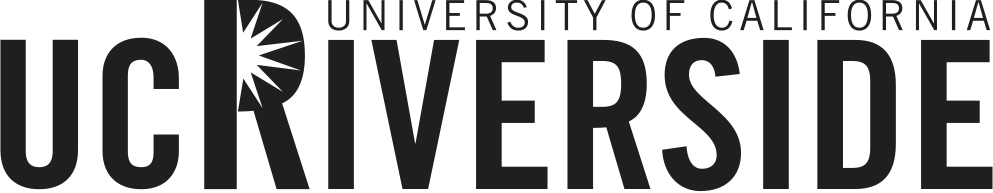

SPTA 2017 is hosted by the UCR Department of Physics & Astronomy and California Science Project. Lectures are in the University of California, Riverside, Physics Building, Reading Room 3035. Informational flyer.
| 8:30am | Coffee & Networking | ||
| 9:00am | Opening | Welcome | Prof. Ken Barish (Dept. Chair) |
| 9:30am | Physics Refresher | Thermal Physics | Prof. Shan-Wen Tsai |
| 11:00am | Research Lecture | Duality and condensed matter physics | Prof. Michael Mulligan |
| 12:00pm | Lunch | ||
| 1:00pm | Research Lecture | Superconducting Spintronics and Topological Superconductors | Prof. Peng Wei |
| 2:00pm | Research Lecture | Nanotechnology in the Age of Information (slides) | Prof. Nathan Gabor |
| 3:00pm | Teaching Physics | Example activities for classroom use | Daniel McKinney |
| 8:30am | Coffee & Networking | ||
| 9:00am | Physics Refresher | Optics (slides) | Prof. Michael Anderson |
| 11:00am | Research Lecture | Quantum Electrodynamics with Feynman Diagrams (notes, resources) | Prof. Flip Tanedo |
| 12:00pm | Lunch | ||
| 1:00pm | Research Lecture | Surface Physics: A View of the Top (slides) | Prof. Jory Yarmoff |
| 2:00pm | Teaching Physics | Example activities for classroom use | Daniel McKinney |
| 8:30am | Coffee & Networking | ||
| 9:00am | Physics Refresher | Electricity & Magnetism (slides) | Prof. Robert Clare |
| 11:00am | Research Lecture | Quantum computation and quantum error correction (slides) | Prof. Leonid Pryadko |
| 12:00pm | Lunch | ||
| 1:00pm | Teaching Physics | Teaching Philosophy (slides) | Prof. Michael Anderson |
| 3:00pm | Teaching Physics | Example activities for classroom use | Daniel McKinney |
| 8:30am | Coffee & Networking | ||
| 9:00am | Physics Refresher | Classical Mechanics | Prof. Allen Mills |
| 11:00am | Research Lecture | Higgs Physics (slides) | Prof. Gail Hanson |
| 12:00pm | Lunch | ||
| 1:00pm | Lab Research Experience | ||
| Lab Tour | Prof. Igor Barsukov's Lab | ||
| Lab Tour | Prof. Joshua Lui's Lab | ||
| Lab Tour | Prof. Nathan Gabor's Lab | ||
| Lab Tour | Prof. Yongtao Cui's Lab | ||
| Lab Tour | Prof. Allen Mills' Lab | ||
| 8:30am | Coffee & Networking | ||
| 9:00am | Research Lecture | The Standard Model (slides) | Prof. Owen Long |
| 10:00am | Teaching Physics | Physics Education | Dr. Maria Simani |
| 11:00am | Teaching Physics | Discussion | Dr. Maria Simani, Daniel McKinney |
| 12:00pm | Lunch | ||
| 1:00pm | Teaching Physics | Demo Exchange | Daniel McKinney |
| 3:00pm | Teaching Physics | Example activities for classroom use | Daniel McKinney |
Prof. Igor Barsukov's Lab focuses on experimental condensed matter physics and spintronics in particular. We design magnetic nanoscale devices and study spin dynamics and spin transport using microwave/terahertz spectroscopy. The goal of this research is to better understand the interplay of magnons and phonons and to develop energy-efficient spintronics applications. (Room 0178 MSE Building, Phone: 951-827-5389)
The Lui group focuses on laser spectroscopy and Ultrafast science of Innovative materials. In particular, we are interested in the electron, phonon and spin dynamics in novel two-dimensional systems, such as graphene, boron nitride and transition-metal dichalcogenides, as well as heterogeneous structures formed from these atomically thin materials. Our experimental techniques include Raman, infrared, terahertz, and ultrafast pump-probe spectroscopy and imaging. Our research also involves state-of-the-art nanoscale device fabrication and new methods of material fabrication, characterization and manipulation. (Room 0172 MSE Building, Phone: 347-839-5818)
Our group is interested in the discovery of new quantum phenomena in atomically thin two-dimensional (2D) electronic materials including graphene, hexagonal boron nitride, and layered transition metal chalcogenides. These materials, many of which can be separated into few or single atomic layers, exhibit quasi-low dimensionality that may lead to strongly correlated electron behavior. Among correlated electronic materials, true 2D materials provide the distinct advantage that they are one atom thick, thus allowing the utilization of techniques generally applied to small atomic ensembles, such as laser-cooling and optical cavity coupling. By incorporating these materials into nanoscale electronic devices, we envision a distinct field of research that explores atomically thin condensed matter systems using precision techniques and concepts employed in atomic, molecular, and optical physics. (Room 0314, MSE Building, 951-827-5338)
Our research group study quantum materials that exhibit fascinating electrical and magnetic properties, with the focus on probing and manipulating such properties on the nanoscale. We apply a variety of state-of-art experimental tools such as scanning probe microscopy, quantum transport, and nanofabrication. Among these, microwave techniques provide a powerful means to interact with materials and characterize their electro-magnetic response. By combining these methods, we aim to achieve a comprehensive understanding of the underlying physics in these materials and apply them to realize new device concepts and functionalities. (Room 055, MSE Building, Phone 951-827-5395)
The research in the positron laboratory is mainly focused on dense positronium physics, with the long term goal of creating a Bose-Einstein condensation of Ps, and thence an annihilation gamma ray laser. This is an ambitious project, fraught with experimental difficulties, and has already necessitated the development of new experimental techniques. Positronium is a hydrogen-like meta-stable atom composed of an electron and its antiparticle, the positron. These atoms are very similar to hydrogen atoms in their gross structure but, being composed of a particle and its antiparticle, which may annihilate with one another, are inherently unstable. (Room 1153, Physics Building, Phone: 951-827-6469)
| Last | First | School Name | District Name |
|---|---|---|---|
| Kachigan | Megan | St Anthony High School | Diocese of LA |
| Iskandar | Marian | Chaffey District Online High School | Chaffey Joint Union High School District |
| Lopez | Melida | Alliance Renee & Meyer Luskin Academy | LAUSD |
| Gahlhoff | Sonia | Mt Miguel HS | Grossmont UHSD |
| Garcia | Sofia | Banning | Banning |
| Gennrich | Valerie | Trona High School | Trona Joint Unified School District |
| Gurau | Casandra | Jurupa Middle School | Jurupa Unifed School Disitrct |
| Ion | Cosmin | Los Angeles County High School for the Arts | Los Angeles County Office of Education |
| Kainth | Ruhan | La Mirada High School | Norwalk La Mirada Unified School District |
| Ciccarello | Nicole | PUC eCALS | Partnerships to Uplift Communities (PUC) |
| Aleme | Girma | Maranatha High School | Pasadena |
| Avne | Mitchell | Citrus Hill | Val Verde Unified School District |
| Brunjes | Lauren | Southwestern Academy | No District - Private School |
| Connor | Robert | California School for the Deaf, Riverside | Serves all districts in South California |
| Curtis | Christopher | Charter Oak High School | Charter Oak USD |
| Dow | Chris | South Pasadena High School | South Pasadena Unified |
| Hin | Dunant | Edgewood High School | West Covina Unified School District |
| Kent | Marlene | Inspire Charter | Inspire Charter Schools - South |
| Lopez | Jesus | Jurupa Valley High School | Jurupa Unified School District |
| Pelicano | Arnold | Palo Verde High School | Palo Verde Unified School District |
| Klaus | Jon | Northview High School | Covina-Valley Unified |
| Matteson | Michael | Yucaipa High School | Yucaipa-Calimesa Joint Unified School |
| Pal | Florin-George | The Accelerated Schools WAHS | The Accelerated Schools |
| Woods | Patrick | Don Lugo HS | Chino Valley Unified |
| Golcher | Josephine | Rosary Academy | Diocese of Orange |
| Juanillo | Mario | Hesperia High School | Hesperia Unified School District |
| Odom | Kyle | Math and Science College Preparatory | Stem Prep |
| Tolosa | Christopher | Rose City High School | Pasadena Unified School District |


Please e-mail Professor Pryadko (), Professor Yu (), or Dr. Maria Simani () for more information.
This website was designed by and is maintained by Professor Flip Tanedo ().
 © UC Riverside Physics. All rights reserved.